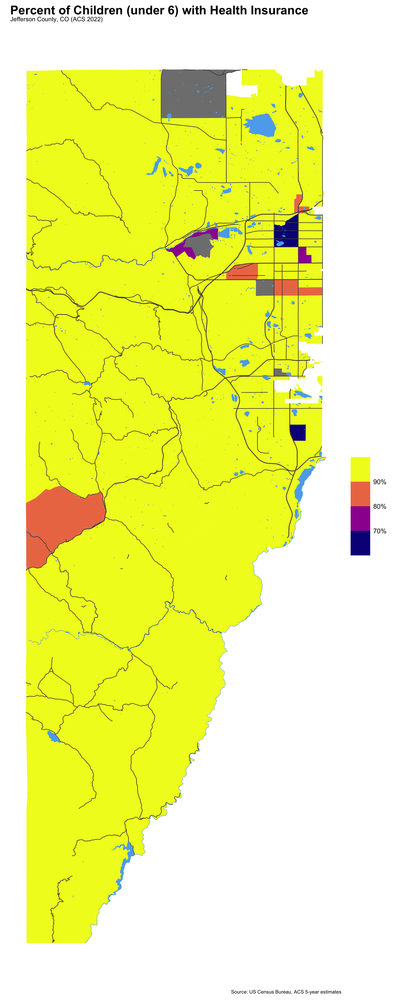

library(tidyverse)
library(tidycensus)
library(scales)
library(janitor)
library(gt)
# census_api_key('INSERT KEY HERE')Introduction
In Part One, I demonstrated how to fetch data and do some basic analysis of U.S. Census data. Each API call with the tidycensus:: package can only be for one year of data, so to do longitudinal analysis requires some additional wrangling. In this post, I’ll build a script that iterates through the available years, fetches the data, then combines the data into a single dataframe. Then, I’ll unpack some of the trends seen in child poverty in Colorado.
In Part Two
In this post, I’d like to drill down further – to the Census block level – to demonstrate how to fetch, wrangle, and visualize data using tidycensus::.
Setup
Data
As I did in Part One, I’ll use the following series from the American Community Survey (ACS):
- B01001_003: Estimate!!Total:!!Male:!!Under 5 years (all racial groups)
- B01001_027: Estimate!!Total:!!Female:!!Under 5 years (all racial groups)
- B17001_004: Estimate!!Total:!!Income in the past 12 months below poverty level:!!Male:!!Under 5 years
- B17001_018: Estimate!!Total:!!Income in the past 12 months below poverty level:!!Female:!!Under 5 years
With the tidycensus:: package, I can gather 5-year ACS data for these series from 2009 to 2022.1
Fetching from the tidycensus:: API
In Part One, I used the usmap:: package to quickly map state and county-level data. This package is handy for a quick US map, but it does have limitations, including:
- It doesn’t map using ggplot2, so it’s less customizable than I like, and
- It’s only built for US maps of states and counties (and in this post, I want to map smaller areas).
Fortunately, tidycensus:: is built for this, too! The get_decennial() and get_acs() functions have an argument for geometry=, which if set to TRUE, will return the polygons for your data along with the fields requested in the API call. Geographic options include: “state”, “county”, “block group”, “tract”, “block”, and “zcta” (zip code tabulation area).2
acs_data_block_group <- get_acs(
geography = "block group",
state = "CO",
county = "Denver",
variables = 'B19013_001',
year = 2022,
survey = "acs5",
geometry = TRUE
)Getting data from the 2018-2022 5-year ACSDownloading feature geometry from the Census website. To cache shapefiles for use in future sessions, set `options(tigris_use_cache = TRUE)`.
|
| | 0%
|
|= | 1%
|
|= | 2%
|
|== | 3%
|
|=== | 4%
|
|=== | 5%
|
|==== | 6%
|
|===== | 7%
|
|====== | 8%
|
|======= | 9%
|
|======= | 10%
|
|======== | 11%
|
|========= | 12%
|
|========= | 13%
|
|========== | 14%
|
|========== | 15%
|
|=========== | 16%
|
|============ | 17%
|
|============ | 18%
|
|============= | 19%
|
|============== | 19%
|
|============== | 20%
|
|=============== | 21%
|
|================ | 22%
|
|================ | 23%
|
|================= | 24%
|
|================== | 25%
|
|================== | 26%
|
|=================== | 27%
|
|==================== | 28%
|
|==================== | 29%
|
|===================== | 30%
|
|===================== | 31%
|
|====================== | 32%
|
|======================= | 33%
|
|======================== | 34%
|
|========================= | 35%
|
|========================= | 36%
|
|========================== | 37%
|
|=========================== | 38%
|
|=========================== | 39%
|
|============================ | 40%
|
|============================= | 41%
|
|============================= | 42%
|
|============================== | 43%
|
|=============================== | 44%
|
|=============================== | 45%
|
|================================ | 46%
|
|================================= | 46%
|
|================================= | 47%
|
|================================== | 48%
|
|=================================== | 49%
|
|=================================== | 50%
|
|==================================== | 51%
|
|==================================== | 52%
|
|===================================== | 53%
|
|====================================== | 54%
|
|====================================== | 55%
|
|======================================= | 56%
|
|======================================== | 57%
|
|======================================== | 58%
|
|========================================= | 59%
|
|========================================== | 60%
|
|=========================================== | 61%
|
|============================================ | 62%
|
|============================================ | 63%
|
|============================================= | 64%
|
|============================================== | 65%
|
|============================================== | 66%
|
|=============================================== | 67%
|
|================================================ | 68%
|
|================================================ | 69%
|
|================================================= | 70%
|
|================================================== | 71%
|
|================================================== | 72%
|
|=================================================== | 73%
|
|=================================================== | 74%
|
|===================================================== | 75%
|
|===================================================== | 76%
|
|====================================================== | 77%
|
|======================================================= | 78%
|
|======================================================= | 79%
|
|======================================================== | 80%
|
|========================================================= | 81%
|
|========================================================= | 82%
|
|========================================================== | 83%
|
|=========================================================== | 84%
|
|=========================================================== | 85%
|
|============================================================ | 86%
|
|============================================================= | 87%
|
|============================================================= | 88%
|
|============================================================== | 88%
|
|=============================================================== | 90%
|
|================================================================ | 91%
|
|================================================================ | 92%
|
|================================================================= | 93%
|
|================================================================== | 94%
|
|================================================================== | 95%
|
|=================================================================== | 96%
|
|==================================================================== | 97%
|
|==================================================================== | 98%
|
|===================================================================== | 99%
|
|======================================================================| 100%# Plot the data using ggplot2
acs_data_block_group %>%
filter(variable == 'B19013_001') %>%
# filter(county == 'Denver County') %>%
ggplot(.) +
geom_sf(aes(fill = estimate), color = NA) +
# removes the grid from the viz
coord_sf(datum = NA) +
scale_fill_viridis_c(option = "plasma",
name = "Median Household Income",
labels = dollar) +
labs(title = "Median Household Income by Block Group in Denver County, CO (ACS 2022)",
caption = "Source: US Census Bureau, ACS 5-year estimates") +
theme_minimal()
Conclusion
In this tidycensus:: post, I demonstrated:
- How to fetch data across multiple years from the U.S. Census Bureau and wrangle the data for longitudinal analysis
- How to move between R or Python objects and Observable JS objects in Quarto
- How to make some simple interactive graphics with Observable Plot
More to come on poverty analysis in future posts!